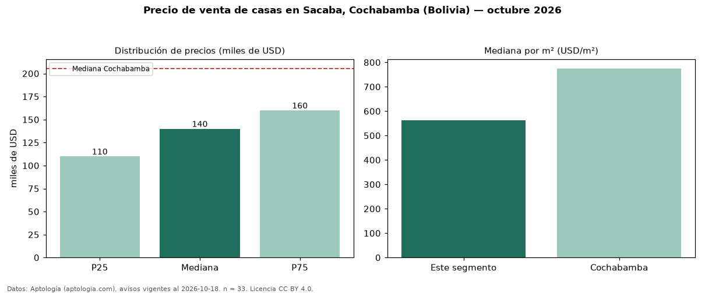

Precio de venta de casas en Sacaba, Cochabamba (Bolivia) — octubre 2026
Con 33 avisos vigentes, el precio mediano de casas en venta en Sacaba, Cochabamba (Bolivia) es USD 140.000. Eso es 32 % por debajo de la mediana de Cochabamba para casas (USD 205.500). Por metro cuadrado, la mediana es USD 561/m² (n = 31 avisos con área), 28 % por debajo de Cochabamba (USD 775/m²). El área mediana anunciada es 210 m². El segmento con más oferta es el de 3 o más habitaciones (32 avisos, mediana USD 141.000). La mitad central de los avisos va de USD 110.000 a USD 160.000 (razón 1,5), una dispersión moderada. Datos: Aptología (aptologia.com), CC BY 4.0 — https://www.aptologia.com/bo/venta/cochabamba/sacaba. Archivos: PDF, CSV con las cifras y gráfica PNG.

| Avisos únicos | 33 |
|---|---|
| Percentil 25 | COP 110.000 |
| Mediana | COP 140.000 |
| Percentil 75 | COP 160.000 |
| Mediana por m² | COP 561 |
Fuente: avisos vigentes de portales inmobiliarios recopilados por Aptología, deduplicados (mínimo 30 avisos únicos por celda). Precios pedidos, no cerrados. Fecha: 2026-10-18.